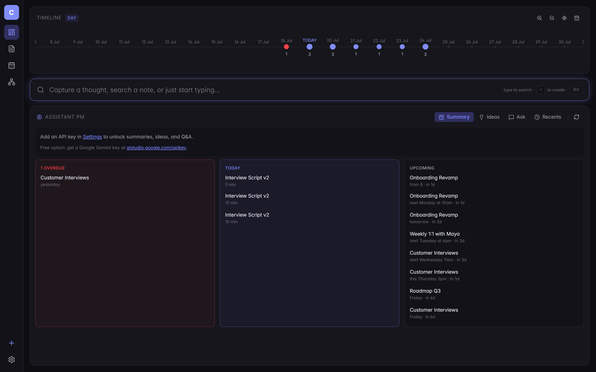
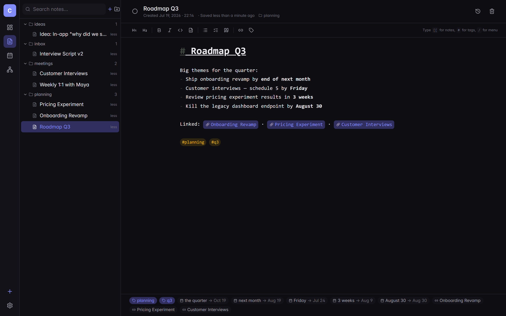
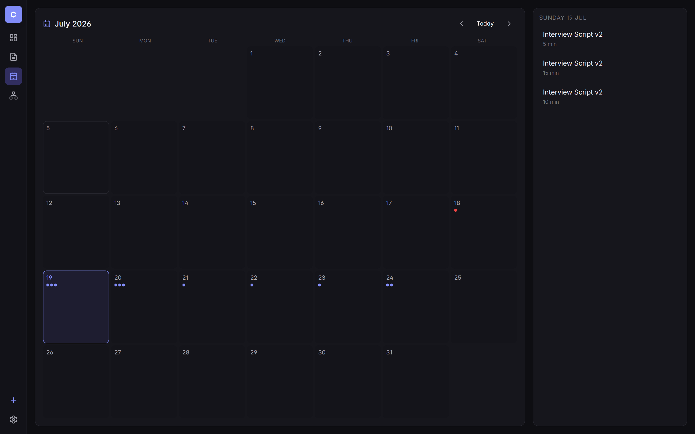
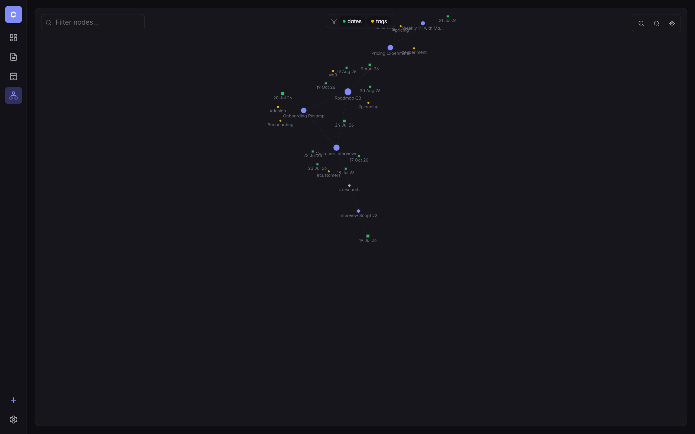

Cortex is a note-taking app that reads dates from your prose, links notes into a graph, and lets an LLM find the ideas you left on the table.

As a PM, my day is a stream of half-thoughts: a customer said something in a call, a metric moved, a teammate flagged a risk on Slack, an idea landed at 11pm.
Linear notes apps let me write that stream. They don't help me see it. By Friday I'm re-reading yesterday's scratch pad looking for the thing I promised Maya, and by Monday I've forgotten the idea I wrote down over the weekend.
Cortex was built to close that gap. Every note is dated. Every commitment I write in plain English — "review with Maya next Tuesday at 4pm" — gets parsed and lands on a timeline.
Every wikilink and tag becomes an edge in a graph, so the shape of my thinking is visible, not buried in folders I can't remember naming.
Then an LLM sits on top: it summarises the week, surfaces ideas I've drafted but haven't scheduled, and lets me ask questions of my own notes. It's not a chatbot glued to a text editor — it's an assistant that already knows what I've been working on.
Built around the way a working PM actually captures information — fast, dated, connected, searchable by shape as well as text.
Summary, Ideas, Ask, and Recents — every tab reads your own vault. Works with Anthropic Claude, Google Gemini (free tier), or OpenAI. Your key, your data, your choice of model.
"Friday", "next Tuesday at 4pm", "in 3 weeks" — extracted from prose and pinned to the timeline.
Day, week, month, quarter, year. Smooth crossfade between levels. Every commitment is a dot.
Wikilinks and tags become edges. Filter by dates or tags. See how work actually clusters.
Global capture bar. Type, hit Enter, keep moving. No modals, no forced folder pick.
Runs in IndexedDB by default. Plug in Supabase to sync across devices — same code, either backend.
Seeded with a plausible week — roadmap, customer interviews, a pricing experiment, a 1:1 with Maya, a stray late-night idea.
Every open thread from your notes surfaces here. The AI panel is triaged into Overdue, Today, and Upcoming; the capture bar is one keystroke away from anywhere.
Write naturally. Wikilinks light up as clickable jumps. Dates in prose get parsed into chips at the bottom of the note — a build-in receipt for every commitment.

Every date you dropped into a note lands here — colored dots on busy days, a sidebar listing today's items. Click a day to see the notes it came from.

Notes, tags, and dates as nodes. Wikilinks as edges. Toggle to see just tags, just dates, or the whole shape — a picture of where your attention has actually gone.

Nothing exotic — deliberately. The interesting choices are in the small pieces: the date parser, the storage adapter, and how the AI stays grounded.
Open the live app — no signup required in local mode. Or read the source.